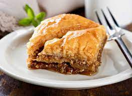

Mouth Watering Baklava Recipe

Baklava is a traditional pastry known for its sweet, rich flavor and flaky texture. It consists of phllo or (filo) dough, nuts, spices, and a sugary syrup.
Although baklava is traditionally associated wth Greek restaurants, its orins are unclear. Food historans believe that modern baklava may have been invented in Turkey during the Ottoman Empire, then modified in Greece. Despite this, the technique of layering unleavened bread with nuts and honey can be traced as far back as the 8th centruy B.C. during the Assyrian Empire.
Ingredients
- Phyllo Dough
- Nuts
- Butter
- Cinnamon
- Water
- Sugar
- Vanilla
- Honey
Steps
- Lay 8 sheets of phyllo dough on a pan, brushing butter between each layer to create a base.
- Sprinkle the phyllo dough with a handful of chopped nuts and cinnamon.
- Top the nuts and cinnamon with 2 more sheets of phyllo dough
- Lay a handful of nuts and cinnamon on top of the 2 layers
- Repeat steps 3 and 4 until several layers are created.
- Top with 8 sheets of phyllo dough, buttering between each sheet
- Cut the baklava into diamond or square shapes
- Bake until the baklava is visibly golden and crispy